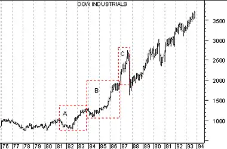

Dow Theory
Overview
In 1897, Charles Dow developed two broad market averages. The "Industrial Average" included 12 blue-chip stocks and the "Rail Average" was comprised of 20 railroad enterprises. These are now known as the Dow Jones Industrial Average and the Dow Jones Transportation Average.
The Dow Theory resulted from a series of articles published by Charles Dow in The Wall Street Journal between 1900 and 1902. The Dow Theory is the common ancestor to most principles of modern technical analysis.
Interestingly, the Theory itself originally focused on using general stock market trends as a barometer for general business conditions. It was not originally intended to forecast stock prices. However, subsequent work has focused almost exclusively on this use of the Theory.
Interpretation
The Dow Theory comprises six assumptions:1. The Averages Discount Everything.
An individual stock's price reflects everything that is known about the security. As new information arrives, market participants quickly disseminate the information and the price adjusts accordingly. Likewise, the market averages discount and reflect everything known by all stock market participants.
2. The Market Is Comprised of Three Trends.
At any given time in the stock market, three forces are in effect: the Primary trend, Secondary trends, and Minor trends.
The Primary trend can either be a bullish (rising) market or a bearish (falling) market. The Primary trend usually lasts more than one year and may last for several years. If the market is making successive higher-highs and higher-lows the primary trend is up. If the market is making successive lower-highs and lower-lows, the primary trend is down.
Secondary trends are intermediate, corrective reactions to the Primary trend. These reactions typically last from one to three months and retrace from one-third to two-thirds of the previous Secondary trend. The following chart shows a Primary trend (Line "A") and two Secondary trends ("B" and "C").
 Minor trends are short-term movements lasting from one day to three weeks.
Secondary trends are typically comprised of a number of Minor trends. The Dow
Theory holds that, since stock prices over the short-term are subject to some
degree of manipulation (Primary and Secondary trends are not), Minor trends are
unimportant and can be misleading.
Minor trends are short-term movements lasting from one day to three weeks.
Secondary trends are typically comprised of a number of Minor trends. The Dow
Theory holds that, since stock prices over the short-term are subject to some
degree of manipulation (Primary and Secondary trends are not), Minor trends are
unimportant and can be misleading.
3. Primary Trends Have Three Phases.
The Dow Theory says that the First phase is made up of aggressive buying by informed investors in anticipation of economic recovery and long-term growth. The general feeling among most investors during this phase is one of "gloom and doom" and "disgust." The informed investors, realizing that a turnaround is inevitable, aggressively buy from these distressed sellers.
The Second phase is characterized by increasing corporate earnings and improved economic conditions. Investors will begin to accumulate stock as conditions improve.
The Third phase is characterized by record corporate earnings and peak economic conditions. The general public (having had enough time to forget about their last "scathing") now feels comfortable participating in the stock market--fully convinced that the stock market is headed for the moon. They now buy even more stock, creating a buying frenzy. It is during this phase that those few investors who did the aggressive buying during the First phase begin to liquidate their holdings in anticipation of a downturn.
The following chart of the Dow Industrials illustrates these three phases during the years leading up to the October 1987 crash.
 In anticipation of a recovery from the recession, informed investors began to accumulate stock during the First phase (box "A"). A steady stream of improved earnings reports came in during the Second phase (box "B"), causing more investors to buy stock. Euphoria set in during the Third phase (box "C"), as the general public began to aggressively buy stock.4. The Averages Must Confirm Each Other.
The Industrials and Transports must confirm each other in order for a valid change of trend to occur. Both averages must extend beyond their previous secondary peak (or trough) in order for a change of trend to be confirmed.
The following chart shows the Dow Industrials and the Dow Transports at the beginning of the bull market in 1982.
 Confirmation of the change in trend occurred
when both averages rose above their previous secondary peak.
Confirmation of the change in trend occurred
when both averages rose above their previous secondary peak.
5. The Volume Confirms the Trend. The Dow Theory focuses primarily on price action. Volume is only used to confirm uncertain situations.
Volume should expand in the direction of the primary trend. If the primary trend is down, volume should increase during market declines. If the primary trend is up, volume should increase during market advances.
The following chart shows expanding volume during an up trend, confirming the primary trend.
 6. A Trend Remains Intact Until It Gives a Definite Reversal Signal.
An up-trend is defined by a series of higher-highs and higher-lows. In order for
an up-trend to reverse, prices must have at least one lower high and one lower low
(the reverse is true of a downtrend).
6. A Trend Remains Intact Until It Gives a Definite Reversal Signal.
An up-trend is defined by a series of higher-highs and higher-lows. In order for
an up-trend to reverse, prices must have at least one lower high and one lower low
(the reverse is true of a downtrend).
When a reversal in the primary trend is signaled by both the Industrials and Transports, the odds of the new trend continuing are at their greatest. However, the longer a trend continues, the odds of the trend remaining intact become progressively smaller. The following chart shows how the Dow Industrials registered a higher high (point "A") and a higher low (point "B") which identified a reversal of the down trend (line "C").